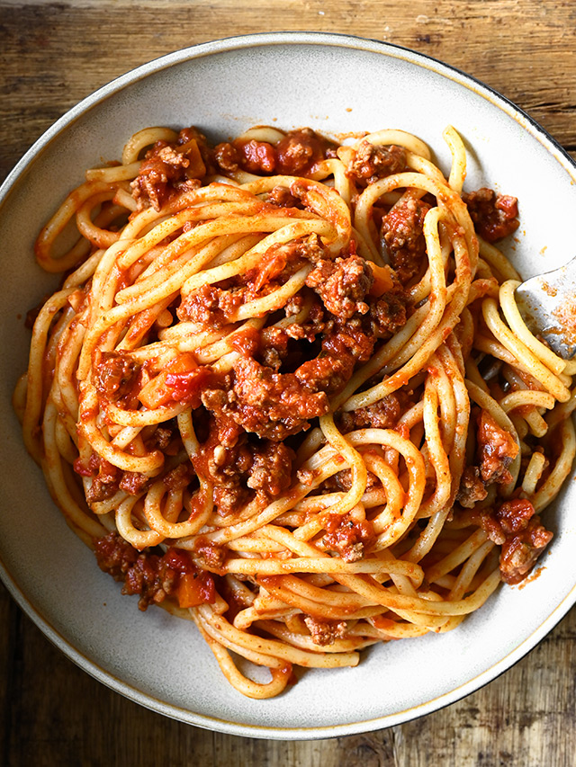

Spaghetti

Description:
Noodles with tomato-based sause.
Ingredients:
- 1 package of spaghetti
- 1 can of spaghetti sauce
- 500 grams of lean ground beef.
Steps:
- Add 10 cups of water to a large pot and bring to a boil.
- Once water is boiling, add spaghetti and cook for 10 minutes.
- In large frying pan, cook ground beef for 5 minutes.
- Add tomato sauce to cooked ground beef and bring to a boil.
- Once boiling, reduce heat and let simmer.
- When spaghetti noodles are cooked, drain water.
- Add ground beef and tomato sauce to noodles, mix and serve.